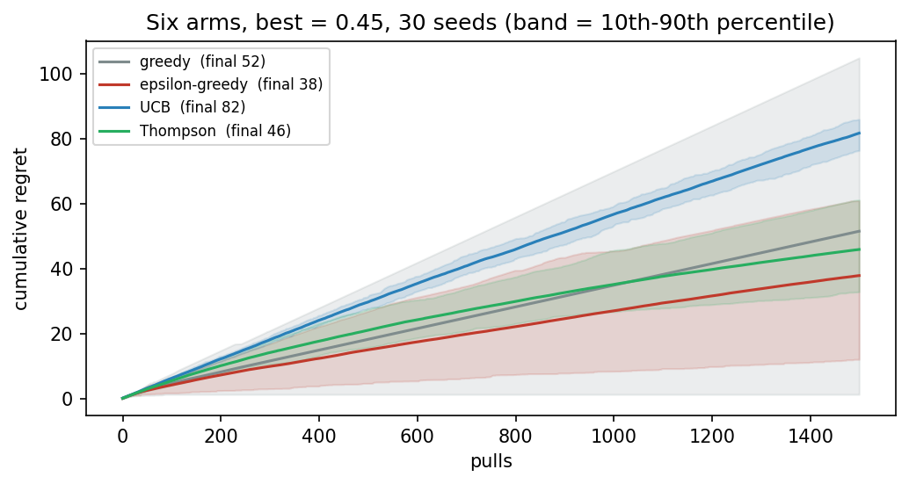
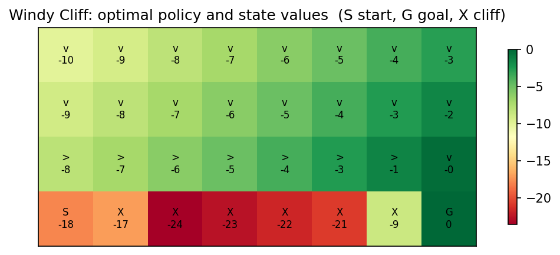
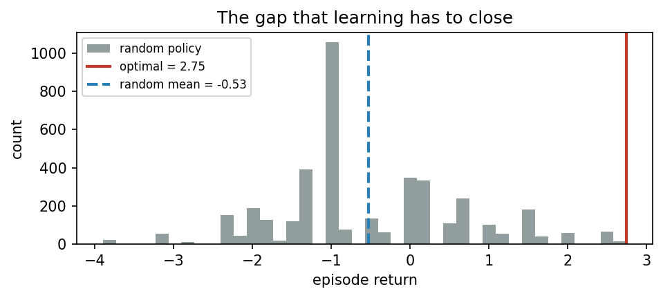

Overview
Reinforcement learning is learning from interaction: An agent acts, the environment answers with a new situation and a reward, and the agent improves its behaviour to collect more reward over time [1]. The same idea trains game-playing programs, controls robots and, as Days 4 and 5 show, aligns language models with human preferences. This day introduces the vocabulary of the field on small problems: bandits, where the only question is which action to try [2, 3]; Markov decision processes, where actions also change the situation [1]; and values with the Bellman equation [4], which allow a small world to be solved exactly. That exact solution becomes the yardstick for every method of the week.
Day at a glance
flowchart LR A["Learning from interaction"] --> B["Bandits"] B --> C["Markov decision processes"] C --> D["Values and the Bellman equation"] D --> E["An exact optimum"] E --> F["Your field"] F --> G["Python step 1"]
Learning from interaction
In supervised learning, every example comes with the right answer. In reinforcement learning, nobody gives the right action; the agent only receives a reward after acting, and the reward may come much later than the action that earned it [1]. The agent and the environment exchange three things in a loop: The environment shows a state, the agent chooses an action, and the environment returns a reward and the next state. The behaviour of the agent, the rule that maps states to actions, is called its policy, and its goal is to maximise the total reward over time, called the return.
Check your understanding. What does a reinforcement learning agent receive that tells it how well it acted?
Bandits: exploration against exploitation
The simplest problem has one state and several actions, like a row of slot machines, each paying with an unknown probability: a multi-armed bandit. The agent must balance exploitation, choosing the arm that looks best now, with exploration, trying other arms that might be better. A greedy agent never explores and can lock onto a poor arm. An epsilon-greedy agent explores at random a small share of the time. Upper confidence bounds give a bonus to arms that have been tried rarely [2], and Thompson sampling chooses each arm with the probability that it is the best [3]. The price of learning is measured by regret, the reward lost compared with always choosing the best arm. Part A of the lab lets you play against these strategies.
Animation. Mean cumulative regret of three strategies over 1500 pulls and twenty seeds. Change epsilon and the UCB constant and watch the ranking.

In Colab, section 1. Run four strategies on six close arms over thirty seeds and compare their regret and its spread.
Check your understanding. Why can a purely greedy strategy end with a large regret?
Markov decision processes
In most problems an action also changes the situation. A Markov decision process describes such a problem with states, actions, transition probabilities, rewards and a discount factor that makes rewards in the near future count more than distant ones [1]. The Markov property says that the next state depends only on the current state and action, not on the whole history. The course uses TokenWorld, a small world in which the agent writes a short sentence one word at a time and is rewarded at the end for its quality. It is a miniature of how a language model is trained with reinforcement learning on Day 4.
In Colab, section 2. Build TokenWorld as a decision process and count its states.
Check your understanding. What does the discount factor control?
Values and the Bellman equation
The value of a state is the return the agent can expect from it when following its policy. Bellman observed that values satisfy a recursive relation: The value of a state equals the expected reward of the next step plus the discounted value of the state that follows [4]. When the transitions are known, this relation can be solved by repeating it until the values stop changing, which is value iteration, a form of dynamic programming. On the Windy Cliff, a gridworld in which the wind sometimes pushes the agent sideways towards a cliff, the optimal policy keeps a safe distance from the edge. Part C of the lab computes a return and a Bellman backup by hand.
Animation. Value iteration on the Windy Cliff, sweep by sweep. Change the slip probability and run again; the arrows show the greedy policy.

In Colab, section 3. Solve the Windy Cliff with value iteration and draw its optimal policy for two wind strengths.
Check your understanding. Why does the optimal policy of the Windy Cliff keep away from the edge?
An exact optimum as a yardstick
TokenWorld is small enough to be solved exactly by enumerating every sentence. The best policy earns a return of 2.75, while a policy that picks words at random earns about minus 0.49 on average and reaches the optimum less than once in two hundred tries. Every learning method of the week is measured against this exact optimum, which turns a vague claim that a method works into a number.

In Colab, section 4. Compute the exact optimum of TokenWorld and the return of the random policy, exactly and by simulation.
Your field
Bandits appear wherever options are tested on the fly: doses in a clinical trial, subject lines of an email campaign, tariffs offered to drivers, irrigation schedules or hint styles in a tutoring system. The notebook's switch loads four options from one of these fields and runs the four strategies of the day on them.
In Colab, section 5. Set the switch to medicine, marketing, energy, agriculture or education and compare the regret of the four strategies.
Going further (optional)
Results in reinforcement learning vary strongly from one random seed to the next, so a single run proves little [6]. The optional section runs every method over many seeds, reports the spread and not only the mean, and checks an estimate against an exact value, a habit that the rest of the week relies on.
In Colab, section 6. Compare estimates over many seeds with their exact values and explore the spread interactively.
Python step 1: Values, variables, lists and decisions
In Colab, after the setup cell. Topics: Values, lists and variables · A decision: explore or exploit · A loop of 300 pulls · A function for the regret · A dictionary of results. Runnable cells, a quick check and three exercises.
Students who have never programmed start with the start-here notebook of the course.
The notebook continues with the hands-on sections, and the interactive lab holds three practice parts and the self-assessment. The study path, the daily task and the research assignment are on the day overview.
Review cards
Select a card to turn it over.
References
[1] Sutton, R. S., & Barto, A. G. (2018). Reinforcement Learning: An Introduction (2nd ed.). MIT Press.
[2] Auer, P., Cesa-Bianchi, N., & Fischer, P. (2002). Finite-time analysis of the multiarmed bandit problem. Machine Learning, 47(2-3), 235-256.
[3] Thompson, W. R. (1933). On the likelihood that one unknown probability exceeds another in view of the evidence of two samples. Biometrika, 25(3-4), 285-294.
[4] Bellman, R. (1957). A Markovian decision process. Journal of Mathematics and Mechanics, 6(5), 679-684.
[5] Van Rossum, G., & Drake, F. L. (2009). Python 3 Reference Manual. CreateSpace.
[6] Henderson, P., Islam, R., Bachman, P., Pineau, J., Precup, D., & Meger, D. (2018). Deep reinforcement learning that matters. In Proceedings of the AAAI Conference on Artificial Intelligence, 32(1), 3207-3214.
[7] Kluyver, T., Ragan-Kelley, B., Pérez, F., Granger, B., Bussonnier, M., Frederic, J., Kelley, K., Hamrick, J., Grout, J., Corlay, S., et al. (2016). Jupyter Notebooks: A publishing format for reproducible computational workflows. In Positioning and Power in Academic Publishing: Players, Agents and Agendas (pp. 87-90). IOS Press.